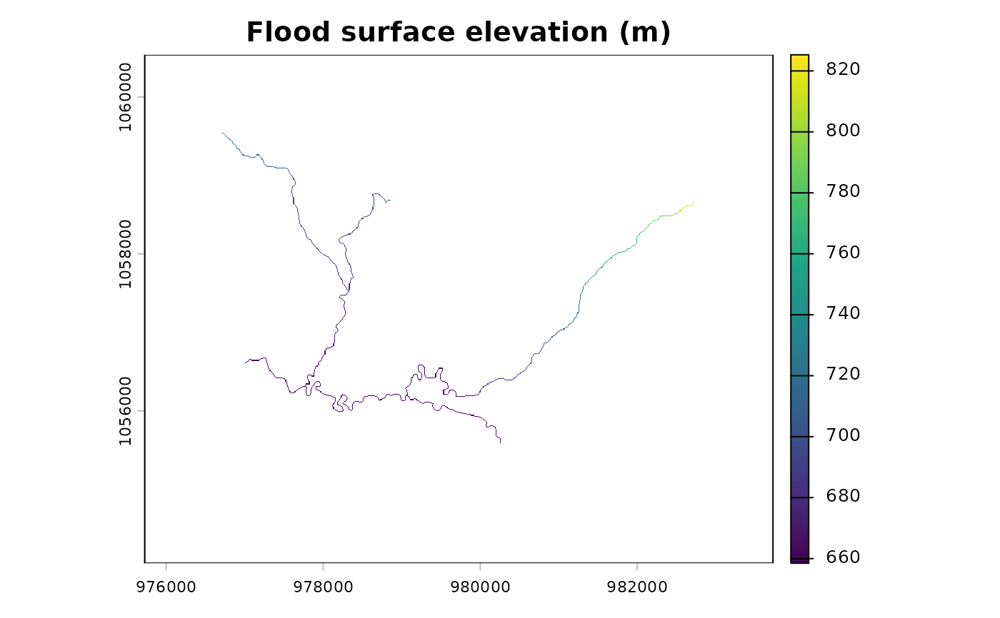

Estimates the bankfull flood surface elevation at each stream cell using
the VCA bankfull regression, then adds the DEM elevation. The result is
the water surface elevation that will be interpolated outward by
fl_flood_depth().
Arguments
- dem
A
SpatRasterof elevation.- streams
A
SpatRasterof rasterized streams (output offl_stream_rasterize()). Cell values are upstream contributing area in hectares (or another proxy for channel size).- flood_factor
Numeric. Multiplier on bankfull depth to estimate flood depth. Default
6(VCA convention).- precip
A
SpatRasterof mean annual precipitation (mm), or a single numeric value applied uniformly. Default1(omits precipitation term).
Details
Bankfull regressions follow the Valley Confinement Algorithm:
bankfull_width = (upstream_area ^ 0.280) * 0.196 * (precip ^ 0.355)
bankfull_depth = bankfull_width ^ 0.607 * 0.145
flood_depth = bankfull_depth * flood_factor
flood_surface = DEM + flood_depthWhen precip = 1 (default), the precipitation term drops out and
flood depth depends only on contributing area.
If your stream raster contains channel width instead of contributing area, the regression still produces a relative flood surface — the absolute depth will differ but the spatial pattern is preserved.
Examples
dem <- terra::rast(system.file("testdata/dem.tif", package = "flooded"))
streams <- sf::st_read(
system.file("testdata/streams.gpkg", package = "flooded"),
quiet = TRUE
)
stream_r <- fl_stream_rasterize(streams, dem, field = "upstream_area_ha")
precip_r <- fl_stream_rasterize(streams, dem, field = "map_upstream")
# With precipitation — realistic flood surface
surface <- fl_flood_surface(dem, stream_r, flood_factor = 6, precip = precip_r)
terra::plot(surface, main = "Flood surface elevation (m)")
